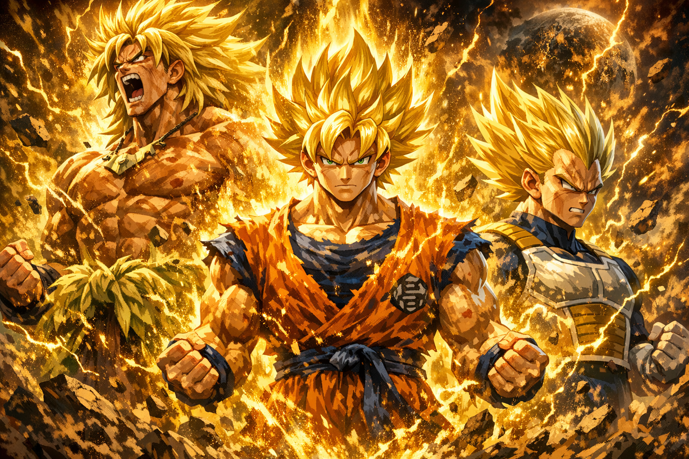
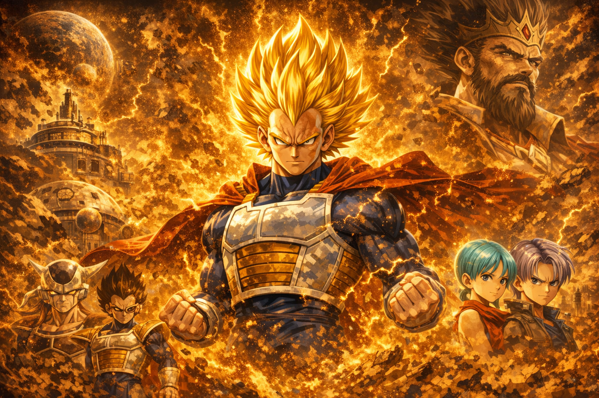

Os lendários Super Saiyajins são figuras míticas no universo de Dragon Ball, descritos como guerreiros de poder incomparável capazes de mudar o destino de planetas inteiros. Segundo a lenda, eles surgem apenas uma vez a cada mil anos, carregando uma força tão intensa que ultrapassa os limites naturais dos Saiyajins comuns. Sua transformação, marcada por aura dourada e poder explosivo, representa o despertar de um potencial adormecido — fruto de emoção extrema, determinação absoluta e espírito de luta. Ao longo da história, heróis como Goku, Vegeta e Broly mostram que o “lendário” não é apenas um título, mas o ápice da evolução guerreira de sua raça.
Vegeta é o orgulho personificado da raça Saiyajin. Nascido como príncipe do planeta Vegeta, ele cresceu destinado à supremacia, treinado desde cedo para ser o guerreiro perfeito. A queda de seu povo não apagou sua determinação; pelo contrário, transformou-a em um fogo ainda mais intenso que o acompanha por toda a vida. Marcado pela ambição e pela busca incansável por poder, Vegeta inicialmente vê o mundo através da lente do orgulho. Porém, ao longo de sua jornada, ele evolui — não apenas como lutador, mas como indivíduo. Sua rivalidade com Goku se torna combustível para ultrapassar limites antes considerados impossíveis, enquanto sua relação com a Terra revela um lado que ele próprio jamais imaginou possuir. Ainda assim, Vegeta nunca abandona sua essência. Sua postura firme, seu senso de honra e sua dedicação ao treinamento o tornam uma figura única: um príncipe que se recusa a ser definido pelo passado, e um guerreiro que nunca para de avançar. Ele é mais do que um herdeiro de um povo destruído — é o símbolo vivo da resiliência Saiyajin e um dos maiores combatentes de todos os tempos.
